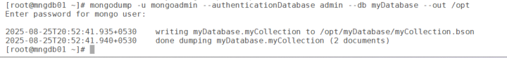
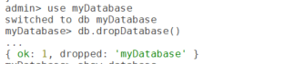
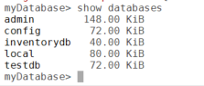

This guide explains how to drop (delete) a MongoDB database using the mongosh shell. We'll use the myDatabase database created previously and the mongoadmin user for authentication. Dropping a database is a destructive action, so proceed with caution.
mongoadmin) with the readWriteAnyDatabase and userAdminAnyDatabase roles.sudo systemctl status mongod).mongosh installed (included with mongodb-org).bindIp set in /etc/mongod.conf (e.g. 0.0.0.0) and port 27017 open.mongodump).Always create a backup before proceeding:
mongodump -u mongoadmin --authenticationDatabase admin --db myDatabase --out /path-to-backup
myDatabase with mongodump before dropping it.The mongosh shell provides a straightforward command to drop a database.
Connect as the mongoadmin user:
mongosh -u mongoadmin -p --authenticationDatabase adminEnter the password when prompted. You'll see the admin> prompt.
List the available databases to confirm the target database exists:
show databasesSwitch to the database you want to delete (e.g. myDatabase):
use myDatabaseDrop the database:
db.dropDatabase()This deletes myDatabase and all its collections.

{ ok: 1, dropped: 'myDatabase' } confirms the drop.db.dropDatabase() drops whichever database you are currently in. Check the prompt shows the right name (here myDatabase>) before you press Enter.show databasesmyDatabase should no longer appear.

exitIf dropDatabase() fails like this:
test> use myDatabase
switched to db myDatabase
myDatabase> db.dropDatabase()
MongoServerError[Unauthorized]: not authorized on myDatabase to execute command { dropDatabase: 1, lsid: { id: UUID("c0782ad2-d8d6-40f4-b661-dc8478569459") }, $db: "myDatabase" }Check the user's existing privileges:
myDatabase> db.runCommand({ connectionStatus: 1 })
{
authInfo: {
authenticatedUsers: [ { user: 'mongoadmin', db: 'admin' } ],
authenticatedUserRoles: [
{ role: 'readWriteAnyDatabase', db: 'admin' },
{ role: 'userAdminAnyDatabase', db: 'admin' }
]
},
ok: 1
}readWriteAnyDatabase lets a user read and write data in any database, but it does not include the dropDatabase action. That action comes from dbAdmin (or dbAdminAnyDatabase, dbOwner, root).Switch to the admin database and grant your user the required privilege:
use admin
db.grantRolesToUser(
"mongoadmin",
[ { role: "dbAdmin", db: "myDatabase" } ]
)Or, if you want full access to that database:
db.grantRolesToUser(
"mongoadmin",
[ { role: "readWrite", db: "myDatabase" }, { role: "dbAdmin", db: "myDatabase" } ]
)Then run use myDatabase and db.dropDatabase() again.
mongodump before dropping:
mongodump -u mongoadmin --authenticationDatabase admin --db myDatabase --out /path/to/backupmyDatabase) using mongosh. This is a critical operation, so always verify the database name and back up the data beforehand. For further details, see the MongoDB documentation for db.dropDatabase().